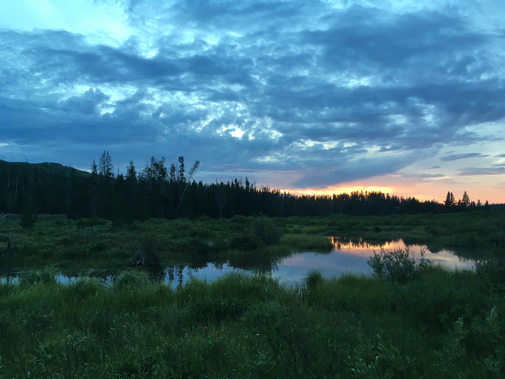

’Twas brillig, and the slithy toves Did gyre and gimble in the wabe: All mimsy were the borogoves, And the mome raths outgrabe.
“Beware the Jabberwock, my son! The jaws that bite, the claws that catch! Beware the Jubjub bird, and shun The frumious Bandersnatch!”
He took his vorpal sword in hand; Long time the manxome foe he sought— So rested he by the Tumtum tree And stood awhile in thought.
And, as in uffish thought he stood, The Jabberwock, with eyes of flame, Came whiffling through the tulgey wood, And burbled as it came!
One, two! One, two! And through and through The vorpal blade went snicker-snack! He left it dead, and with its head He went galumphing back.
“And hast thou slain the Jabberwock? Come to my arms, my beamish boy! O frabjous day! Callooh! Callay!” He chortled in his joy.
’Twas brillig, and the slithy toves Did gyre and gimble in the wabe: All mimsy were the borogoves, And the mome raths outgrabe.